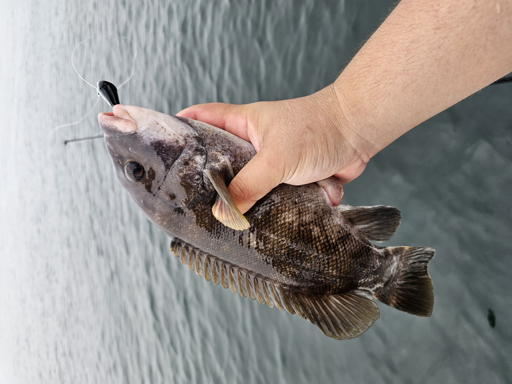
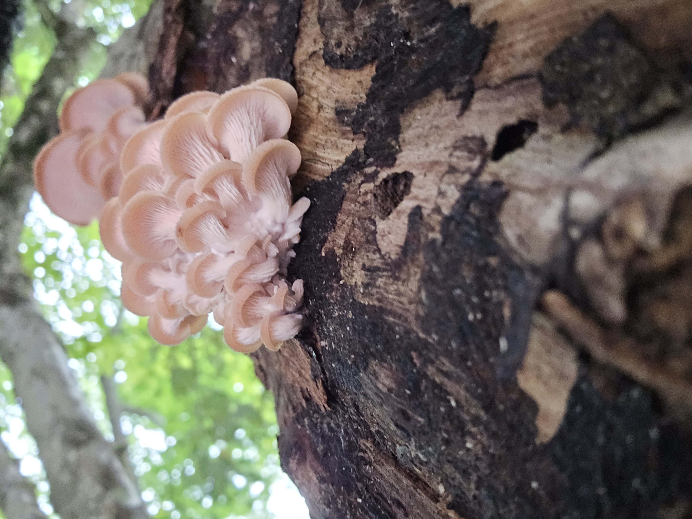

Who am I?
I was born in Mainland China, and grew up in Hongkong. Ever since I was little, the outdoor has always been a part of me. I loved fishing, hiking, and foraging.
What do I do?
Fishing
Fishing is one of my favorate passtime. I expolore the aqatic enviroments all around new england, from mountain stream to the deep ocean, I have caught many different species of fish.
Hiking

I love the feeling of exploration, and the view when you climbed a mountian always bring excitement and joy to me. I have hiked many trails all around the world. From Hongkong to Japan, to the US and Canada
Foraging
My family came from Yunnan, China, where mushroom picking is a local custom. I grew up in the mountians picking mushroom with my family. I have learned to identify the mushrooms of Northeast and go on foraging trips regularly.